Powering abright futurefor Tasmania.
We own, operate and maintain the poles, wires and substations that carry power to more than 300,000 Tasmanian homes and businesses.
Shocks, sparking, fallen powerlines or life support equipment?
If someone is hurt or in danger, call 000. For anything that isn't an emergency, contact us online.
We deliver power to Tasmanians. Our vision is to be trusted by our customers to deliver today and create a better tomorrow, with a network that is safe, cost-effective and ready for a clean energy future.
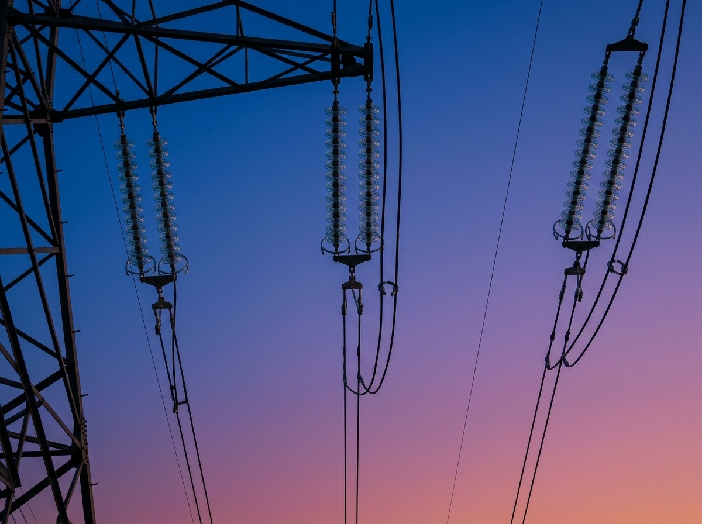
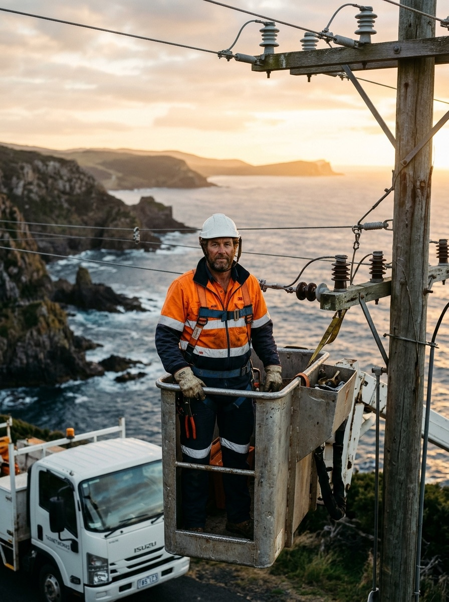
From the North West coast to the Huon Valley, our field teams work out of Cambridge, Rocherlea, Devonport, Burnie and response centres across the state, restoring power day and night.
About TasNetworks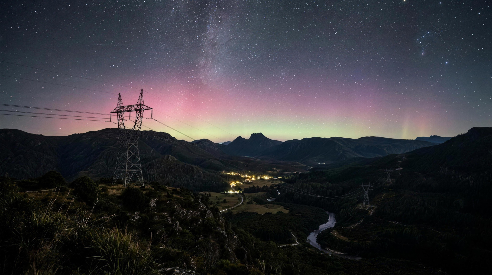
One island.
One network, keeping the lights on.
Power out?
Here's what to do.
Check for power outages
View current outages on our interactive map and follow the ones near you to stay up to date as crews restore supply.
View the outage mapNot seeing your outage on the map?
Let us know so we can get a crew to you. You can also report a faulty streetlight or trees growing close to powerlines.
Report a power outageDon't be left in the dark
Make sure you're ready to deal with power outages. Keep a torch, a charged phone and a plan, especially if you rely on life support equipment.
Prepare for an outageMake a claim or request an insurance letter
If an outage has damaged your appliances or spoiled food, you may be able to claim. Our power supply guarantee sets out what we pay when outages run long.
Start a claimBuilding the network
Tasmania needs next.
Australia is in the midst of a major transition to renewable energy. We're strengthening and expanding the network to connect new generation and keep supply secure.
North West Transmission Developments
A once in a generation upgrade to Tasmania's transmission network, now under construction.
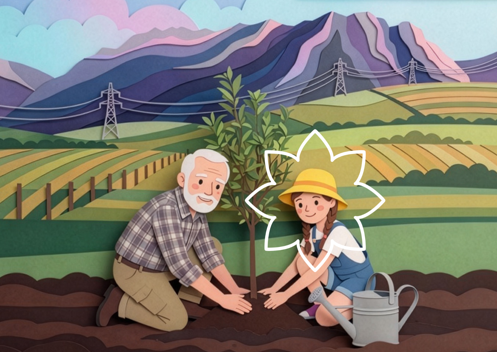
Bright Futures Fund
A positive and lasting legacy for communities within the NWTD project area.
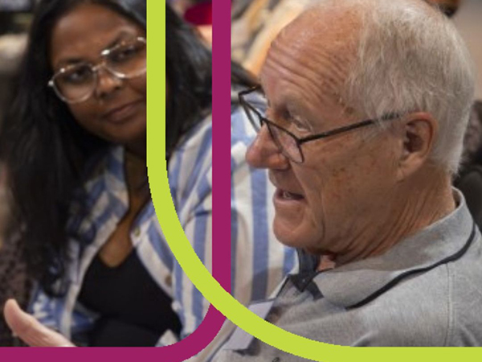
Revenue Reset 2029 to 2034
How we plan, prioritise and fund the network over the next five years and beyond.
Community batteries
Supporting renewable energy and helping the network transition to a clean energy future.
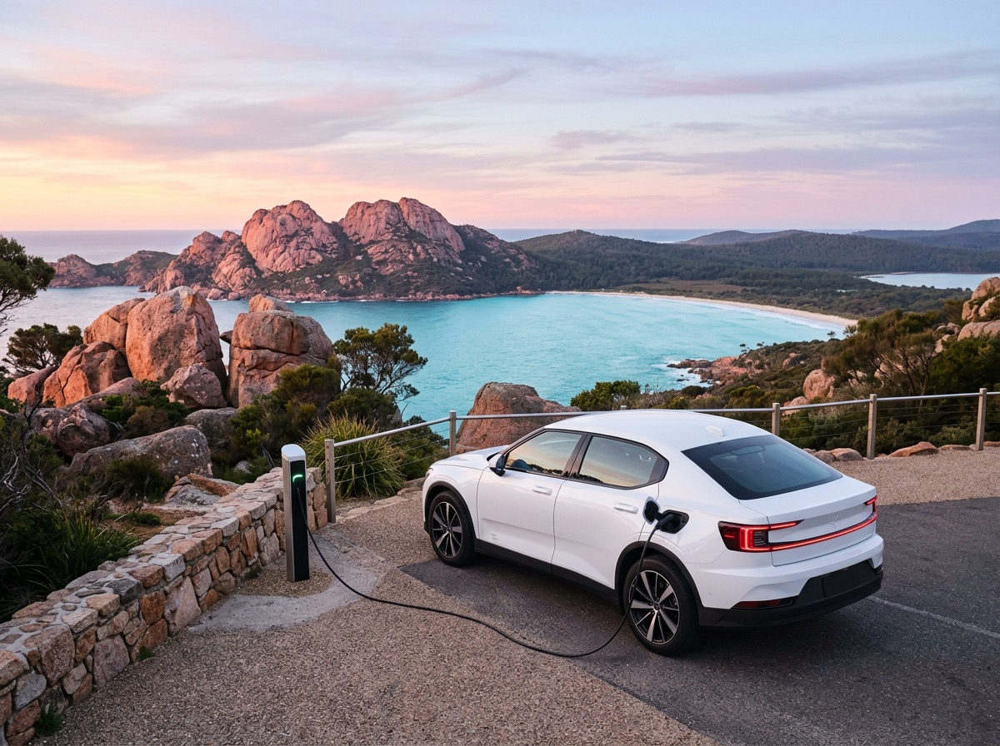
Electric vehicles
Planning for more EVs on Tasmanian roads and the charging that comes with them.
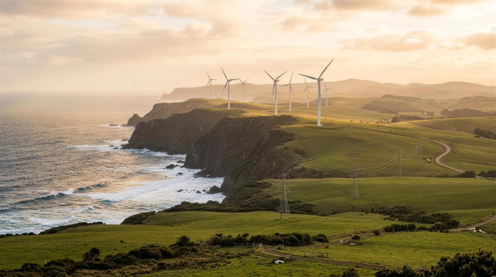
Planning our network
Our role as Tasmania's jurisdictional planner in the National Electricity Market.
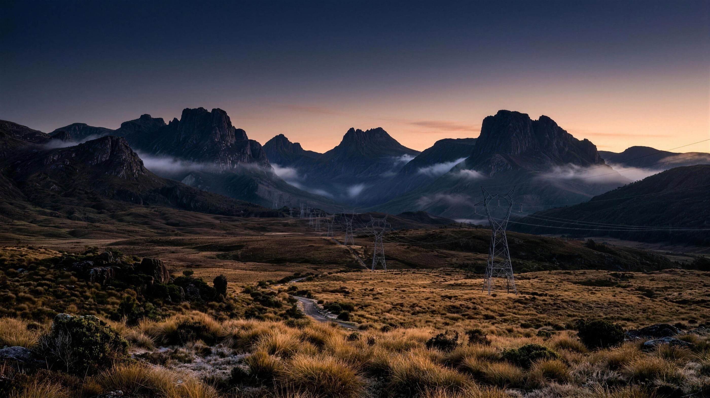
A once in a generation upgrade.
The North West Transmission Developments will unlock new renewable generation, support Project Marinus and bring economic benefits to communities across regional Tasmania.
Safety,
every single day.
Powerlines are part of the Tasmanian landscape. Here's how we keep them, and you, safe.
- Trees near powerlinesWhen branches touch lines they can cause outages, bushfires and serious accidents.→
- Look Up, Look OutWorking, farming or moving high loads near overhead lines.→
- Drone and helicopter inspectionsHow and when we inspect the network from the air.→
- Fallen powerlinesAlways assume they're live. Stay well clear and call 132 004.→
- Digging around power polesCheck before you dig and keep clear of underground cables.→
Connecting with
our community.
We're committed to working alongside the communities we're a part of to make a meaningful difference to the lives of Tasmanians, now and into the future.
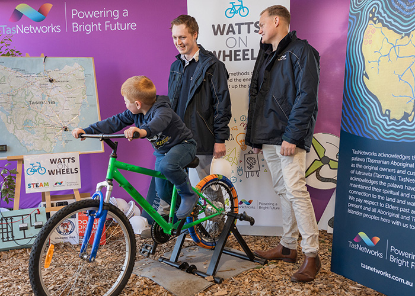
Bright Sparks School Program
Hands-on energy and safety learning for Tasmanian students.
Free Energy Support Program
With Uniting Vic Tas, free for all Tasmanians.
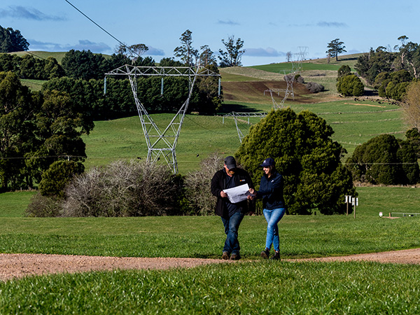
Talk with TasNetworks
Share your thoughts on what we're doing.
Community Grants Program
Funding local clubs, events and projects across the state.
Apply nowReconciliation Action Plan
Our commitment to walking alongside palawa and all Aboriginal and Torres Strait Islander peoples.
Read the plan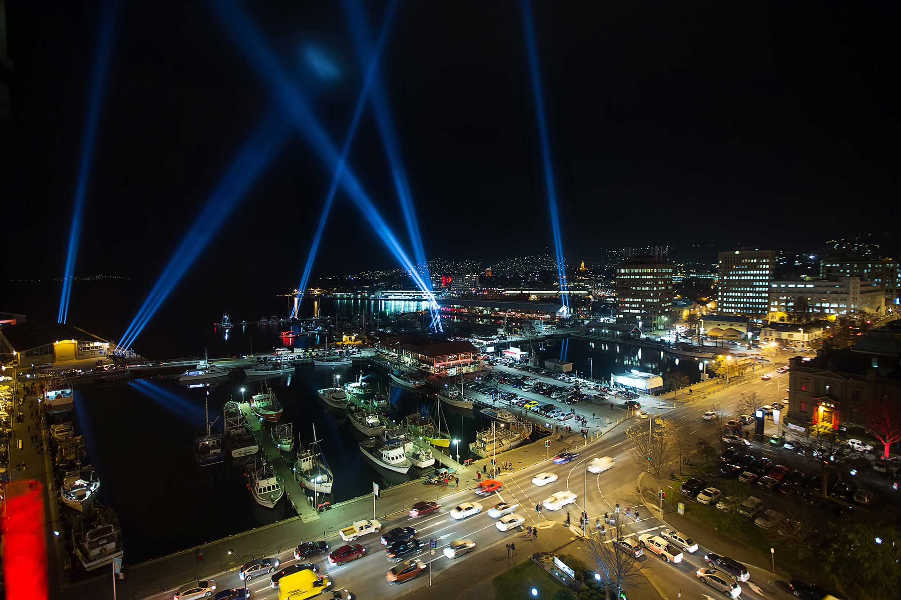
Community Partnerships
Long-term partners making regional Tasmania stronger.